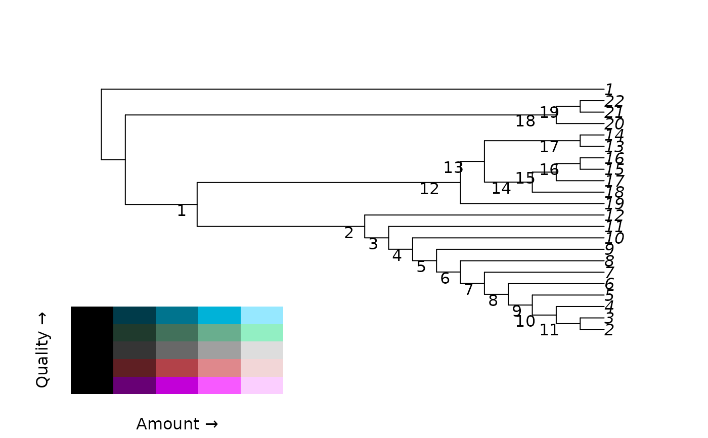
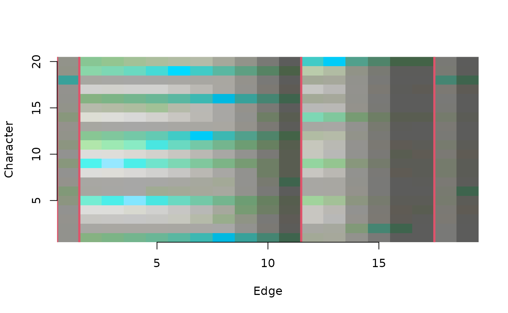

ConcordanceTable() plots a concordance table
(Smith 2026)
.
Usage
ConcordanceTable(
tree,
dataset,
Col = QACol,
largeClade = 0,
xlab = "Edge",
ylab = "Character",
...
)Arguments
- tree
A tree of class
phylo.- dataset
A phylogenetic data matrix of phangorn class
phyDat, whose names correspond to the labels of any accompanying tree. Perhaps load into R usingReadAsPhyDat(). Additive (ordered) characters can be handled usingDecompose().- Col
Function that takes vectors
amountandqualityand returns a vector of colours. QCol colours by data quality (concordance); QACol by quality and amount of information.- largeClade
Integer; if greater than 1, vertical lines will be drawn at edges whose descendants are both contain more than
largeCladeleaves.- xlab
Character giving a label for the x axis.
- ylab
Character giving a label for the y axis.
- ...
Arguments to
abline, to control the appearance of vertical lines marking important edges.
Value
ConcordanceTable() invisibly returns an named list containing:
"info": The amount of information in each character-edge pair, in bits;"relInfo": The information, normalized to the most information-rich pair;"quality": The normalized mutual information of the pair;"col": The colours used to plot the table.
References
Smith MR (2026). “Which characters support which clades? Exploring the distribution of phylogenetic signal using concordant information.” Forthcoming.
See also
Other split support functions:
JackLabels(),
Jackknife(),
MaximizeParsimony(),
MostContradictedFreq(),
PresCont(),
SiteConcordance
Examples
# Load data and tree
data("congreveLamsdellMatrices", package = "TreeSearch")
dataset <- congreveLamsdellMatrices[[1]][, 1:20]
tree <- referenceTree
# Plot tree and identify nodes
library("TreeTools", quietly = TRUE)
plot(tree)
nodeIndex <- as.integer(rownames(as.Splits(tree)))
nodelabels(seq_along(nodeIndex), nodeIndex, adj = c(2, 1),
frame = "none", bg = NULL)
QALegend(where = c(0.1, 0.4, 0.1, 0.3))

# View information shared by characters and edges
ConcordanceTable(tree, dataset, largeClade = 3, col = 2, lwd = 3)
axis(1)
axis(2)

# Visualize dataset
image(t(`mode<-`(PhyDatToMatrix(dataset), "numeric")), axes = FALSE,
xlab = "Leaf", ylab = "Character")